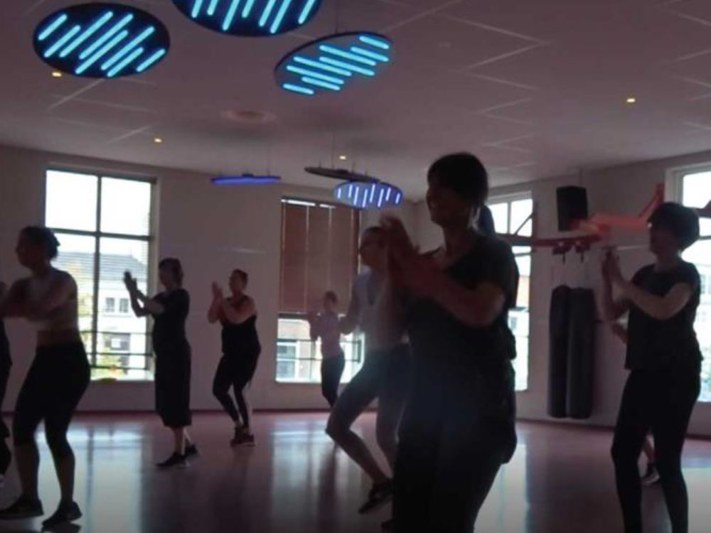
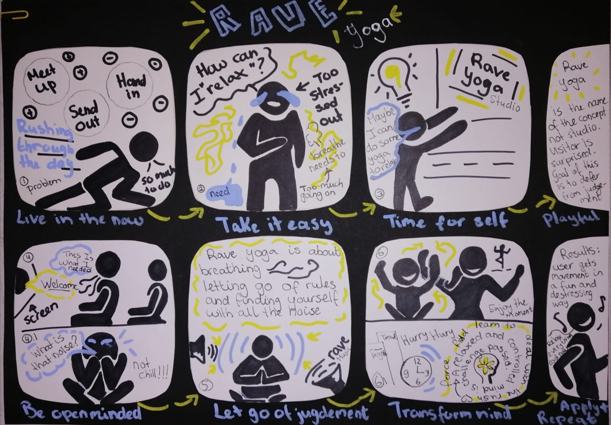

Ever since I first started studying I went back and forward between Design and Technology.
This why I love how the two are becoming more interlinked than ever before.
Throughout the years I have come to see that my strength lies in development stages of the creative process.
Becoming a UX-design designer is a great way to further develop my ressearch skills while still actively work with interactive technolgies.
I am happy to share my first results and learnings with you. Let's have look...
Bespoke
Hallmark gift unwrapping experience
Concept development, product testing, creative addaptations
Part one of the project focused on conducting research on your assigned persona.This was later combined
for our user case.
" How might we questions" helped me better emphatize with users during the different develoment stages.
Created a tool that enables users to connect with past, present and future generations through card giving.
I got good practice on team work and was reminded that less can be more, to not be afraid to "Kills my darlings. Great Project!
Research for Design
Conduct Ethnographic research on dancefitness group "Salsation".
Field research, group participations and interview methods.
Part one of the project focused on conducting research on your assigned persona.This was later combined
for our user case.

" How might we questions" helped me better emphatize with users during the different develoment stages.
Created a tool that enables users to connect with past, present and future generations through card giving.
I got good practice on team work and was reminded that less can be more, to not be afraid to "Kills my darlings. !
Design and Creativity
Creative stages portfolio
From ideation to itterations.
Part one of the project focused on conducting research on your assigned persona.This was later combined
for our user case.
" How might we questions" helped me better emphatize with users during the different develoment stages.
Created a tool that enables users to connect with past, present and future generations through card giving.

I got good practice on team work and was reminded that less can be more, to not be afraid to "Kills my darlings.
Research for Design
Conduct Ethnographic research on dancefitness group "Salsation".
Field research, group participations and interview methods.
Part one of the project focused on conducting research on your assigned persona.This was later combined
for our user case.
" How might we questions" helped me better emphatize with users during the different develoment stages.
Created a tool that enables users to connect with past, present and future generations through card giving.
I got good practice on team work and was reminded that less can be more, to not be afraid to "Kills my darlings.
Let's Keep in Touch!
Paulina Martina
UX-Researcher